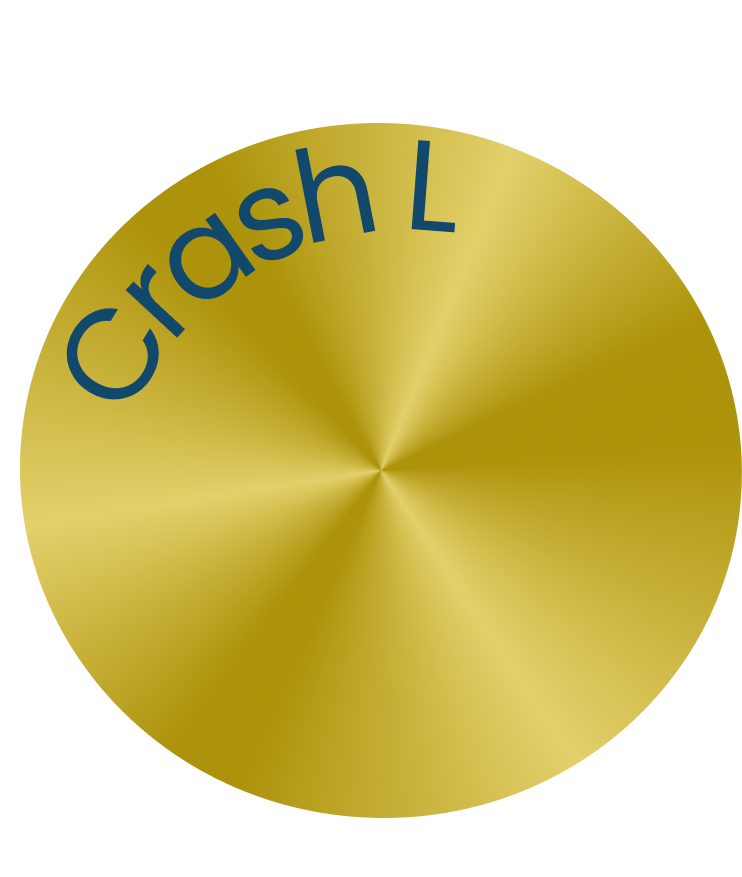
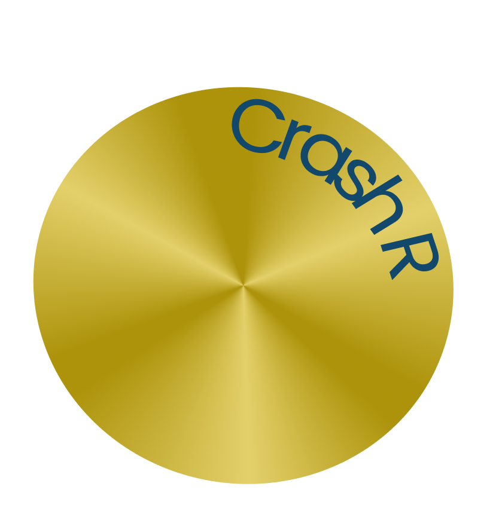
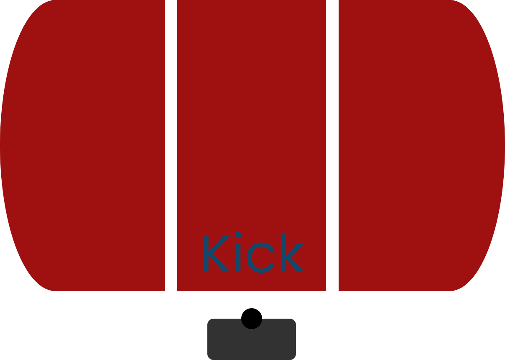
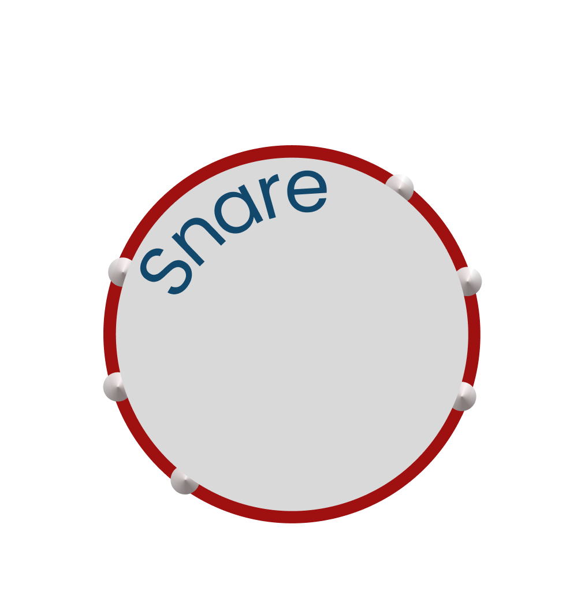

Aprender a tocar la batería es una experiencia emocionante que combina coordinación, ritmo y expresión musical. Para comenzar, es crucial familiarizarse con la disposición básica de la batería, que incluye la caja, los toms, la caja china, los platillos y el bombo. Practica la posición correcta de las baquetas y trabaja en la técnica de golpeo para obtener un sonido claro y consistente.

Please, rotate your screen.
| Componente | Tecla |
|---|---|
| Crash L | r |
| Crash R | u |
| Hi Hat O | m |
| Componente | Tecla |
|---|---|
| Small Tom | s |
| Medium Tom | h-g |
| Ride | i |
| Componente | Tecla |
|---|---|
| Tom | k |
| Tom 2 | j |
| Kick | b |
| Componente | Tecla |
|---|---|
| Hi Hat C | n |
| Snare | c-v |
| - | - |